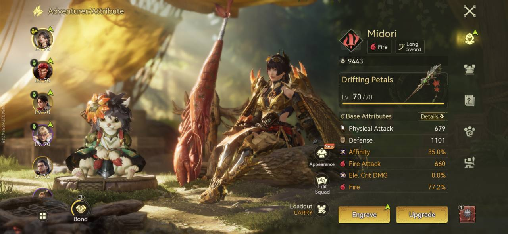
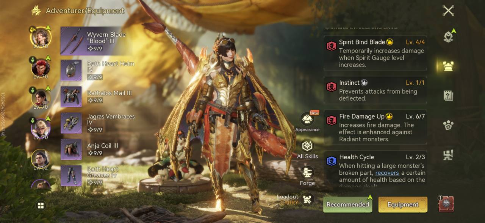
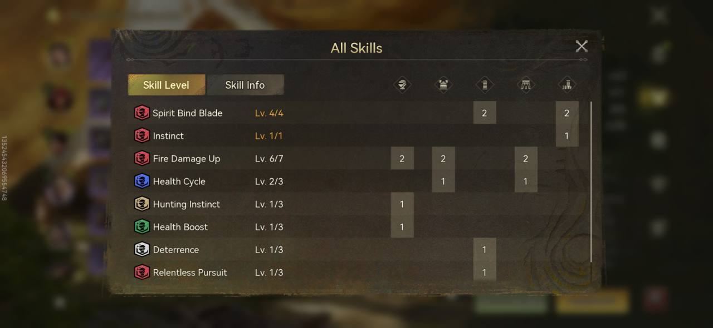
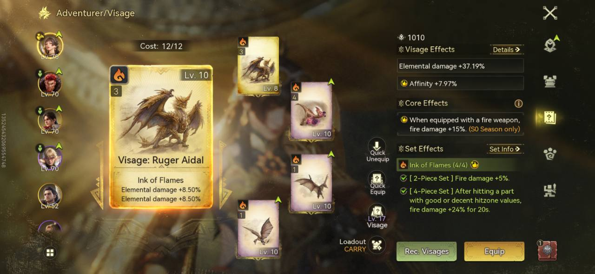
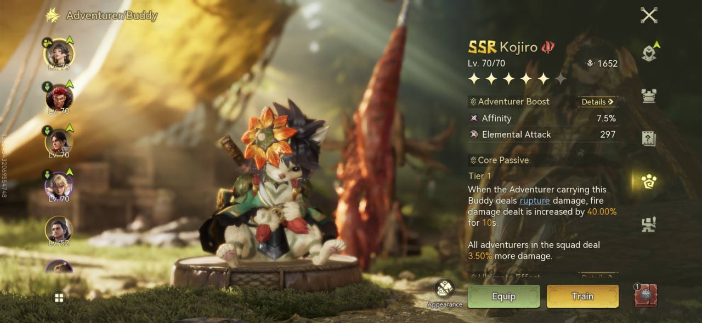

Fire · Long Sword · SSR Midori
SSR Midori — Fire Long Sword
A level 70 fire loadout built around Wyvern Blade “Blood” III, Ink of Flames, and SSR Kojiro. Screenshot-verified equipment and current stats, with the fully upgraded Fire Damage Up target shown separately.

Equipped vs. upgrade target
Fire Damage Up
Current · screenshot6/7
Fully upgraded · author target7/7
6/7 is equipped in both the skill and equipment screenshots. 7/7 is the fully upgraded build target supplied by the author; it is not the current screenshot value. The screenshots do not establish the upgrade path or resulting stats.
Character stats · captured loadout
- Character level: 70/70
- Physical Attack: 679
- Defense: 1101
- Affinity: 35.0%
- Fire Attack: 660
- Ele Crit DMG: 0.0%
- Fire: 77.2% (screen label; exact meaning not expanded)
- Displayed attribute-screen rating: 9443 (unlabeled metric)
Weapon
Wyvern Blade “Blood” III — equipment screen shows 9/9.
Armor loadout
- Head: Rath Heart Helm IV — 9/9
- Chest: Rathalos Mail III — 9/9
- Arms: Jagras Vambraces IV — 9/9
- Waist: Anja Coil III — 9/9
- Legs: Rath Heart Greaves IV — 9/9
Skills
- Spirit Bind Blade — 4/4
- Instinct — 1/1
- Fire Damage Up — currently 6/7 (fully upgraded target: 7/7, confirmed by the build author)
- Health Cycle — 2/3
- Hunting Instinct — 1/3
- Health Boost — 1/3
- Deterrence — 1/3
- Relentless Pursuit — 1/3
Visage · Ink of Flames
- Rüger Aidal — Ink of Flames (the screenshot spells the name “Ruger Aidal”).
- Selected gold card: Lv. 10; two Elemental damage +8.50% lines. A second gold card is visible at Lv. 8. Other visible cards are Lv. 10; their names are not shown.
- Visage cost: 12/12. Displayed Visage-screen rating: 1010 (unlabeled metric).
- Combined Visage Effects: Elemental damage +37.19%; Affinity +7.97%.
- Core effect: when equipped with a fire weapon, fire damage +15% (S0 Season only).
- Ink of Flames set: 4/4. Two-piece bonus: Fire damage +5%.
- Four-piece bonus: after hitting a part with good or decent hitzone values, fire damage +24% for 20 seconds.
Buddy · SSR Kojiro
- SSR Kojiro — Lv. 70/70. Displayed buddy-screen rating: 1652 (unlabeled metric).
- Adventurer Boost: Affinity 7.5%; Elemental Attack 297.
- Core Passive, Tier 1: when the Adventurer carrying this Buddy deals rupture damage, fire damage dealt is increased by 40.00% for 10 seconds.
- All adventurers in the squad deal 3.50% more damage.
Build notes
- SSR Midori is the author-provided character designation; the attribute screenshot shows Midori, Fire, and Long Sword.
- “Drifting Petals” appears at Lv. 70/70 on the attribute screen. Its role is not explicit; the equipped weapon name is taken from the equipment screen.
- Stats are transcribed as displayed. Conditional Visage and buddy effects are listed separately, not added again to character stats. Target 7/7 stats are not shown.
- The skills panel may have content below the visible scroll area. Only the eight readable skills are transcribed; no additional skills are inferred.
- Buddy star rank and text below the visible passive are not reliably readable. No star rank or hidden effects are claimed.
- No combat rotation was provided or shown, so none is invented. Original screenshots are preserved without AI replacement or editing.
Build screenshots








